Anteprima delle slide
01. Garden-path sentences
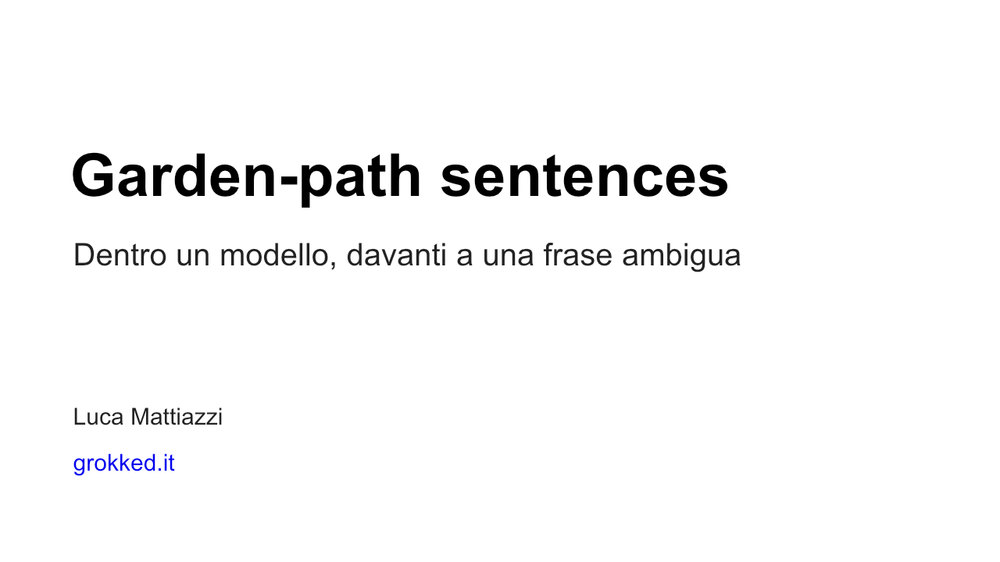
02. The old man the boat.
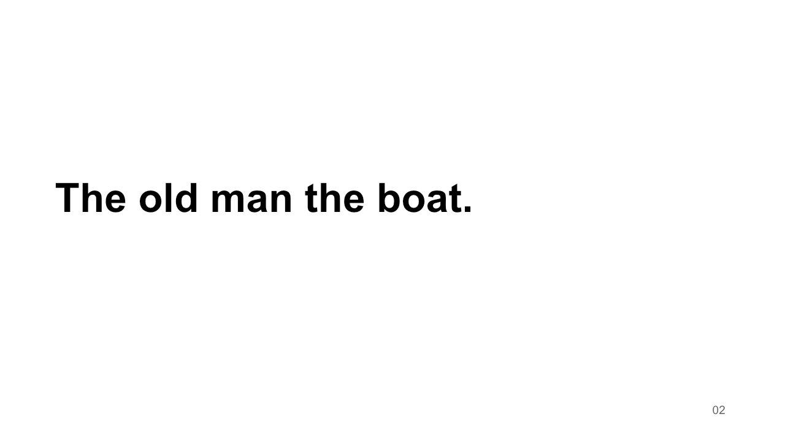
03. Il contesto resta accessibile
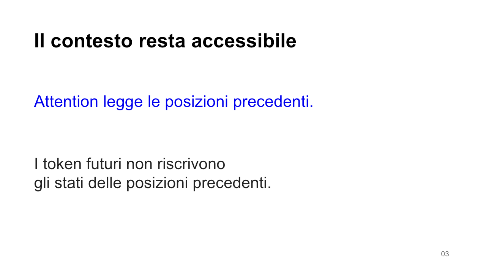
04. Surprisal
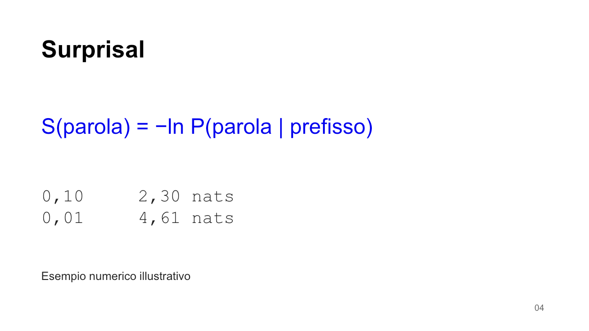
05. Un confronto controllato
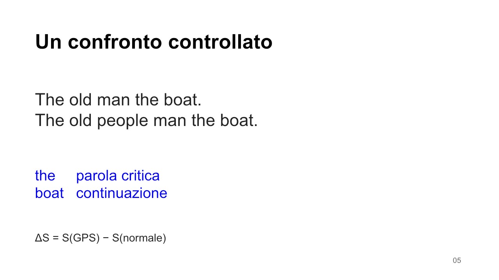
06. L’esperimento
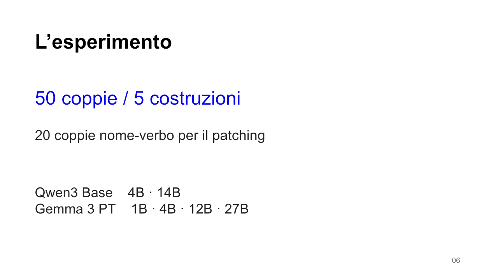
07. La previsione cambia
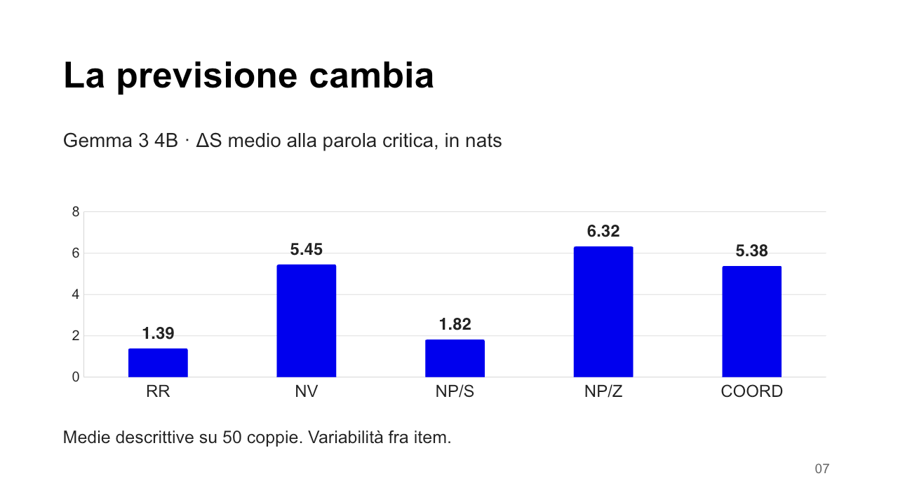
09. Activation patching
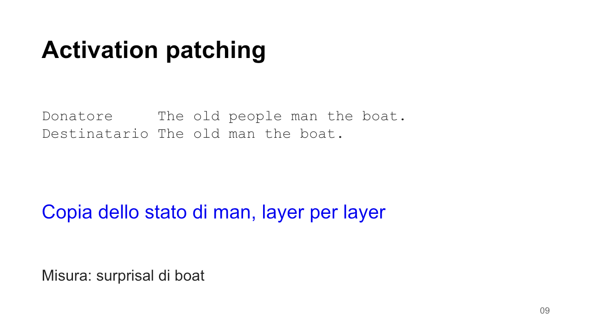
10. Il recupero del gap
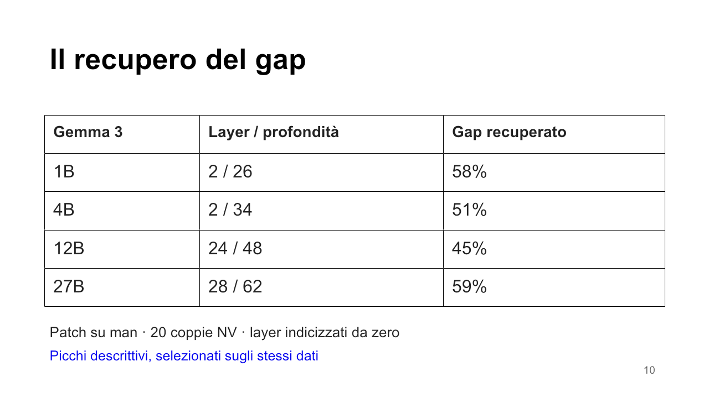
11. Quanto possiamo concludere?
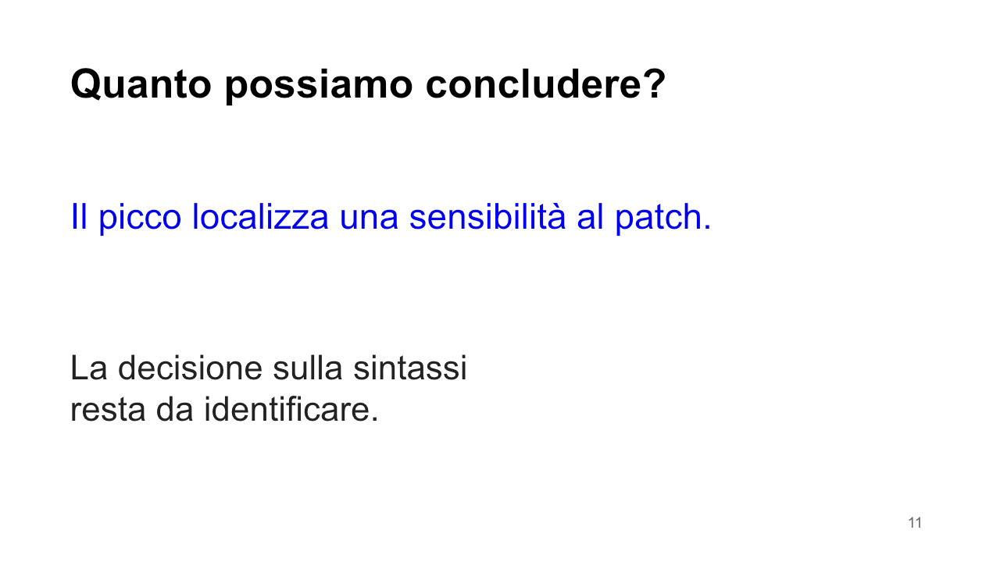
12. Il controllo del 100%
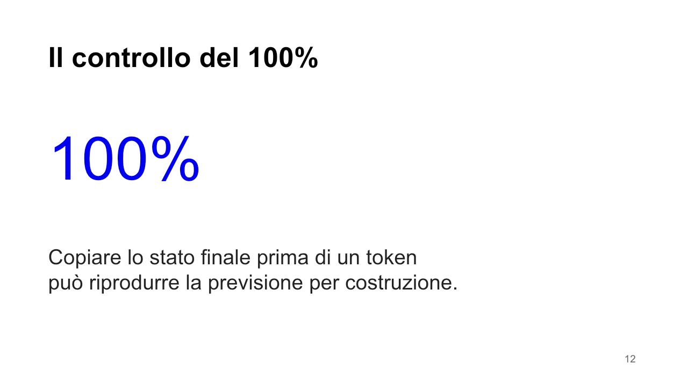
13. Chi ha fatto cosa?
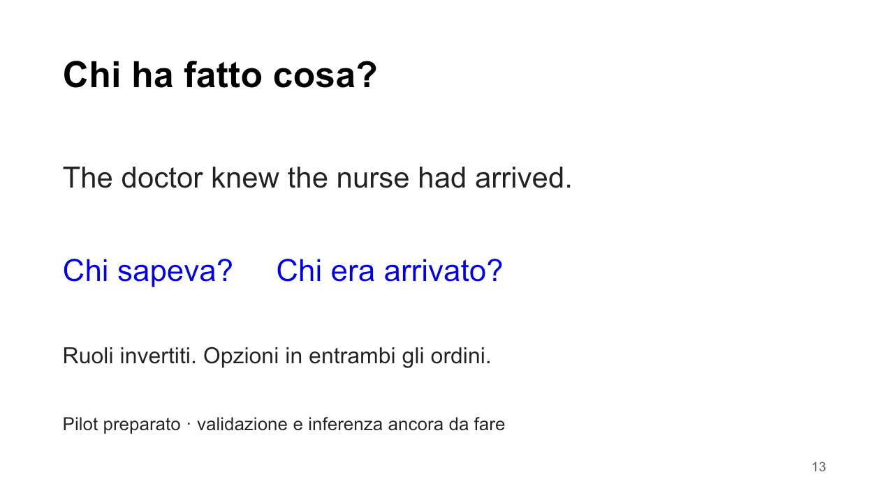
14. La misura decide la domanda
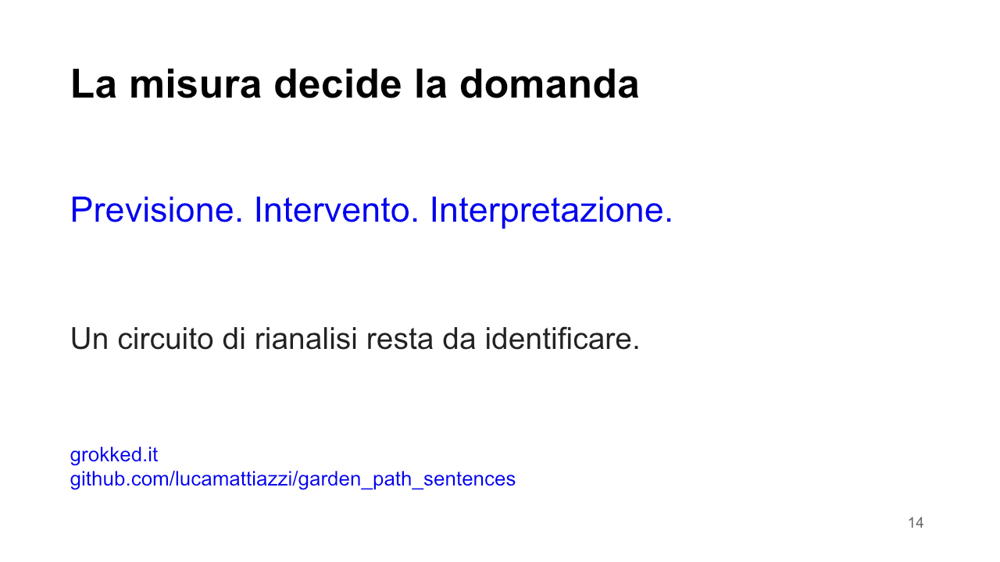
15. Backup / le cinque costruzioni
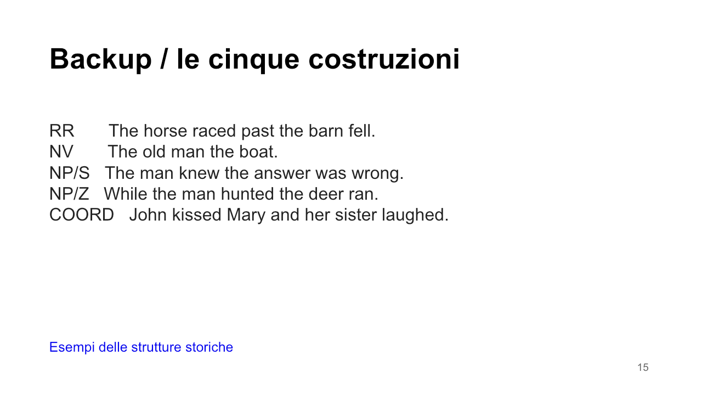
16. Backup / sensibilità agli item
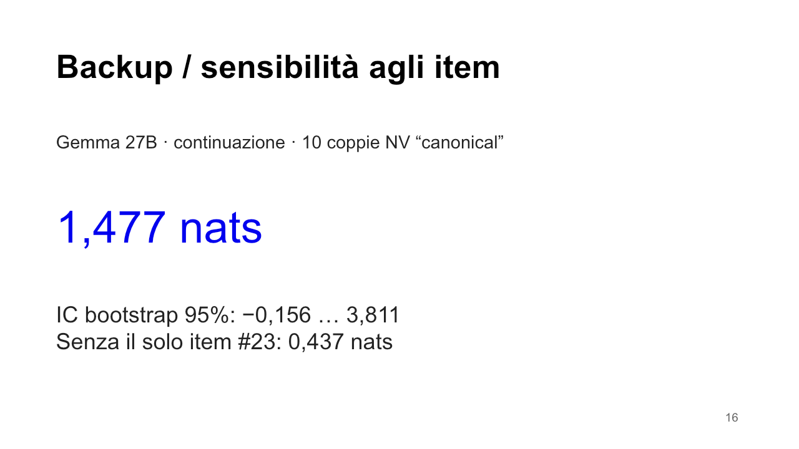